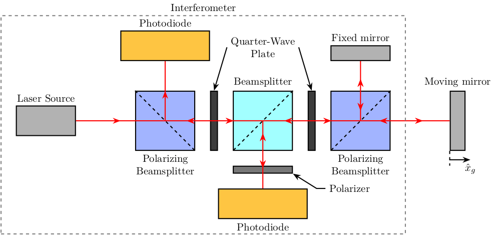

Tikz - Optics
Table of Contents
1 Optics
1.1 Interferometer - Schematic
\begin{tikzpicture} % Parameters definitions \def\splitw{2.0cm} % Width of the split mirrors \def\splith{2.0cm} % Height of the split mirrors \def\photow{3.0cm} % Width of the photodiodes \def\photoh{1.0cm} % Height of the photodiodes \def\mirrorw{1.0cm} % Width of the mirrors \def\mirrorh{1.5cm} % Height of the mirrors \def\spacing{1.0cm} % First intersection of the beam % Colors \definecolor{c_beamsplitter}{RGB}{162,255,255} % light blue \definecolor{c_photodiode}{RGB}{254,197,66} % light orange \definecolor{c_mirror}{RGB}{178,178,178} % light grey \definecolor{c_polar_beamsplitter}{RGB}{162, 180, 255} % blue \definecolor{c_polarizer}{RGB}{120,120,120} % light grey \definecolor{c_quart_wave_plate}{RGB}{60,60,60} % light grey % Styles \tikzstyle{laser} = [draw, fill=c_mirror, minimum width=2.0cm, minimum height=1.0cm] \tikzstyle{beamsplitter} = [draw, fill=c_beamsplitter, minimum width=2.0cm, minimum height=2.0cm] \tikzstyle{polar_beamsplitter} = [draw, fill=c_polar_beamsplitter, minimum width=2.0cm, minimum height=2.0cm] \tikzstyle{photodiode} = [draw, fill=c_photodiode, minimum width=3.0cm, minimum height=1.0cm] \tikzstyle{quart_wave_plate} = [draw, fill=c_quart_wave_plate, minimum width=0.1cm, minimum height=2.0cm] \tikzstyle{polarizer} = [draw, fill=c_polarizer, minimum width=2.0cm, minimum height=0.1cm] \tikzstyle{mirror} = [draw, fill=c_mirror, minimum width=0.5cm, minimum height=2.0cm] \tikzstyle{mirror_hor} = [draw, fill=c_mirror, minimum width=2.0cm, minimum height=0.5cm] % Elements \node[laser] (laser) {}; \node[polar_beamsplitter, right=2.0*\spacing of laser] (PBS1) {}; \node[photodiode, above=1.0*\spacing of PBS1] (PD1) {}; \node[quart_wave_plate, right=0.5*\spacing of PBS1] (WP1) {}; \node[beamsplitter, right=0.5*\spacing of WP1] (BS) {}; \node[polarizer, below=0.5*\spacing of BS] (P) {}; \node[photodiode, below=0.5*\spacing of P] (PD2) {}; \node[quart_wave_plate, right=0.5*\spacing of BS] (WP2) {}; \node[polar_beamsplitter, right=0.5*\spacing of WP2] (PBS2) {}; \node[mirror, right=2.0*\spacing of PBS2] (M2) {}; \node[mirror_hor, above=1.0*\spacing of PBS2] (M1) {}; % Beam Splitter orientations \draw[dashed] (PBS1.north west) -- (PBS1.south east); \draw[dashed] (BS.north east) -- (BS.south west); \draw[dashed] (PBS2.north east) -- (PBS2.south west); % LASER \draw[red, ->-=.5] (laser.east) -- (PBS1.center); \draw[red, ->-=.5] (PBS1.center) -- (PD1.south); \draw[red, ->-=.7, -<-=.3] (PBS1.center) -- (BS.center); \draw[red, ->-=.7, -<-=.3] (BS.center) -- (PBS2.center); \draw[red, ->-=.7, -<-=.3] (PBS2.center) -- (M1.south); \draw[red, ->-=.7, -<-=.3] (PBS2.center) -- (M2.west); \draw[red, ->-=.7, -<-=.3] (BS.center) -- (PD2.north); % Nomenclature \path[] (laser.north) node[above]{Laser Source}; \path[] (PBS1.south) node[below, align=center]{Polarizing\\ Beamsplitter}; \path[] (PBS2.south) node[below, align=center]{Polarizing\\ Beamsplitter}; \path[] (BS.north) node[above]{Beamsplitter}; \path[] (PD1.north) node[above]{Photodiode}; \path[] (PD2.south) node[below]{Photodiode}; \path[] (M1.north) node[above]{Fixed mirror}; \path[] (M2.north) node[above]{Moving mirror}; \draw[<-] (P.south east) -- ++(0.8*\spacing, -0.5*\spacing) -- ++(0.3*\spacing, 0) node[right]{Polarizer}; \node[above=\spacing of BS, align=center] (quarter_BS_label) {Quarter-Wave\\ Plate}; \draw[<-] (WP2.north) -- (quarter_BS_label.east); \draw[<-] (WP1.north) -- (quarter_BS_label.west); % Xg \draw[dashed] (M2.south west) --++(0, -0.5*\spacing); \draw[->] ($(M2.south west) + (0, -0.3*\spacing)$) -- ++(0.7*\spacing, 0) node[below]{$\hat{x}_g$}; % Interferometer \node[fit={($(laser.west|-PD1.north)+(-0.5*\spacing, 0.5*\spacing)$) ($(PD2.south-|PBS2.east)+(0.5*\spacing, -0.5*\spacing)$)}, inner sep=0pt, draw, dashed, color=gray, label={Interferometer}] (P) {}; \end{tikzpicture}
